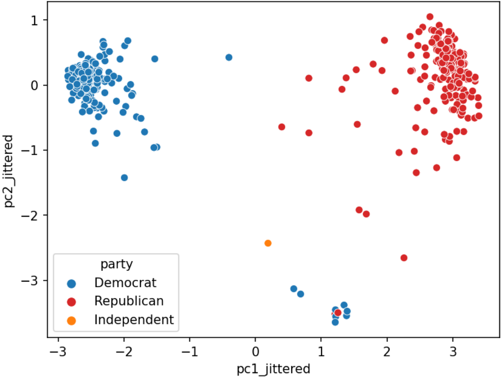

PCA II
Data Variance and Centering
We define the total variance of a data matrix as the sum of variances of attributes.
Formally, the \(i\)-th singular value tells us the component score, i.e., how much of the data variance is captured by the ith principal component. Supposing the number of data points is \(n\):
\[\text{i-th component score} = \frac{(\text{i-th singular value}^2)}{n}\]
Summing up the component scores is equivalent to computing total variance.
Data Centering: PCA has a data centering step that precedes any singular value decomposition, where if implemented defines the component score as above.
PCA Review
Using Principal Components
Steps to obtain Principal Components via SVD:
Center the data matrix by subtracting the mean of each attribute column.
To find the \(k\) principal components:
- Compute the SVD of the data matrix (\(X = U{\Sigma}V^{T}\))
- The first \(k\) columns of \(U{\Sigma}\) (or equivalently, \(XV\)) contain the \(k\) principal components of \(X\).
The principal components are a low-dimension representation that capture as much of the original data’s total variance as possible.
The component scores sum to total variance if we center our data. \[\text{component score}_i = \frac{\sigma_i^{2}}{N}\]
We can also use the SVD to get a rank-\(k\) approximation of \(X\), \(X_k\).
\[X_k = \sum_{j = 1}^{k} \sigma_ju_jv_j^{T} \]
where \(\sigma_j\) is the \(j\)-th singular value of \(X\), \(u_j\) is the \(j\)-th column of \(U\), and \(v_j\) is the \(j\)-th column of \(V\).
If you want to dive deeper into PCA, Steve Brunton’s SVD Video Series is a great resource.
Case Study: House of Representatives Voting
Let’s examine how the House of Representatives (of the 116th Congress, 1st session) voted in the month of September 2019.
Specifically, we’ll look at the records of Roll call votes. From the U.S. Senate (link):
- Roll call votes occur when a representative or senator votes “yea” or “nay,” so that the names of members voting on each side are recorded. A voice vote is a vote in which those in favor or against a measure say “yea” or “nay,” respectively, without the names or tallies of members voting on each side being recorded.
Do legislators’ roll call votes show a relationship with their political party?
Please visit this link to see the full Jupyter notebook demo.
As shown in the demo, the primary goal of PCA is to transform observations from high-dimensional data down to low dimensions through linear transformations.
A related goal of PCA relates to the idea that a low-dimension representation of the data should capture the variability of the original data. For example, if the first two singular values are large and the others are relatively small, then two dimensions are probably enough to describe most of waht distinguishes one observation from another. However, if this is not the case, then a PCA scatter plot is probably omitting lots of information.
We can use the the following formulas to quantify the amount each prinicial component contributes to the total variance:
\[ \text{component score} = \frac{\sigma_i^{2}}{N}\]
\[ \text{total variance} = \text{sum of all the component scores} = \sum_{i=1}^k \frac{\sigma_i^{2}}{N} \]
\[ \text{variance ratio of principal component i} = \frac{\text{component score i}}{\text{total variance}} = \frac{\sigma_i^{2} / N}{\sum_{i=1}^k \sigma_i^{2} / N}\]
In Python, assuming you had a 1D NumPy array of singular values s returned by np.linalg.svd, you could compute the list of variances ratios with s**2 / sum(s**2).
Interpreting PCA
PCA Plot
We often plot the first two principal components using a scatter plot, with PC1 on the \(x\)-axis, PC2 on the \(y\)-axis. This is often called a PCA plot.
If the first two singular values are large and all others are small, then two dimensions are enough to describe most of what distinguishes one observation from another. If not, then a PCA plot is omitting lots of information.
PCA plots help us assess similarities between our data points and if there are any clusters in our dataset. In the case study before, for example, we could create the following PCA plot:

Scree Plots
A scree plot shows the variance ratio captured by each principal component, with the largest variance ratio first.
Scree plots help us visually determine the number of dimensions needed to describe the data reasonably. The singular values that fall in region of the plot after a large drop off correspond to principal components that are not needed to describe the data, since they explain a relatively low proportion of the total variance of the data. For example, in the below plot, we could use the “elbow method” just described to figure out that the first 2 PCs capture the bulk of the information.

PCA with SVD
After finding the SVD of \(X\):

We can derive the principal components of the data. Specifically, the first \(n\) rows of \(V^{T}\) are directions for the \(n\) principal components.
Columns of V are the Directions

The elements of each column of \(V\) (row of \(V^{T}\)) rotate the original feature vectors into a principal component.
The first column of V indicates how each feature contributes (e.g. positive, negative, etc.) to principal component 1.

Coupled together, this interpretation also allows us to understand that:
- The Principal components are all orthogonal to each other because the columns of U are orthonormal.
- Principal Components are axis-aligned. That is, if you plot two PCs on a 2D plane, one will lie on the x-axis, the other on the y-axis.
- Principal Components are linear combinations of columns in our data X
Biplots
Biplots superimpose the directions onto the plot of PC2 vs PC1.
Vector \(j\) corresponds to the direction for feature \(j\) (e.g. \(v_{1j}, v_{2j}\)). - There are several ways to scale biplots vectors; in this course we plot the direction itself. - For other scalings, which can lead to more interpretable directions/loadings, see SAS biplots
Through biplots, we can interpret how features correlate with the principal components shown: positively, negatively, or not much at all.

The directions of the arrow are (\(v_1\), \(v_2\)) where \(v_1\) and \(v_2\) are how that specific feature column contributes to PC1 and PC2, respectively. \(v_1\) and \(v_2\) are elements of the first and second columns of \(V\), respectively (i.e., the first two rows of \(V^T\)).
Say we were considering feature 3, and say that was the green arrow here (pointing bottom right).
\(v_1\) and \(v_2\) are the third elements of the respective columns in \(V\). They are what scale feature 3’s column vector in the linear transformation to PC1 and PC2, respectively.
Here we would infer that \(v_1\) (in the \(x\)/PC1-direction) is positive, meaning that a linear increase in feature 3 would correspond to a linear increase of PC1, meaning feature 3 and PC1 are positively correlated.
\(v_2\) (in the \(y\)/pc2-direction) is negative, meaning a linear increase in feature 3 would result correspond to a linear decrease in PC2, meaning feature 3 and PC2 are negatively correlated.
Applications of PCA
PCA in Biology
PCA is commonly used in biomedical contexts, which have many named variables!
Image Classification
In machine learning, PCA is often used as a preprocessing step prior to training a supervised model.
See the following demo to see how PCA is useful for building an image classification model based on the MNIST-Fashion dataset.
The demo shows how we can use PCA during the Exploratory Data Analysis stage of our data science lifecycle to: - visually identify clusters of similar observations in high dimensions. - find a small basis for representing variations in complex things. - reduce the number of dimensions to make some computation cheaper.
Why PCA, then Model?
- Reduces dimensionality, allowing us to speed up training and reduce the number of features, etc.
- Avoids multicollinearity in the new features created (i.e. the principal components)